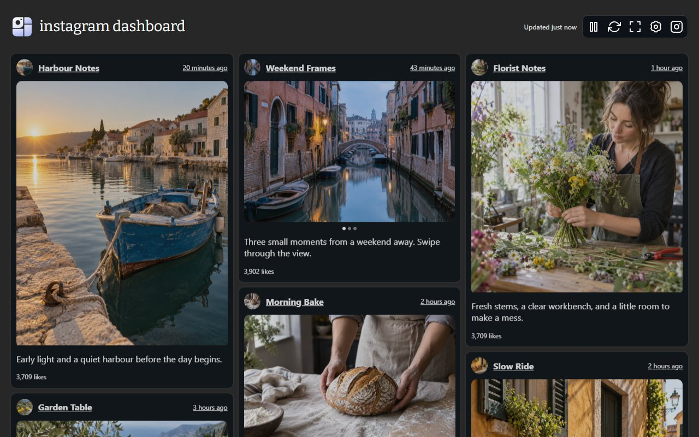
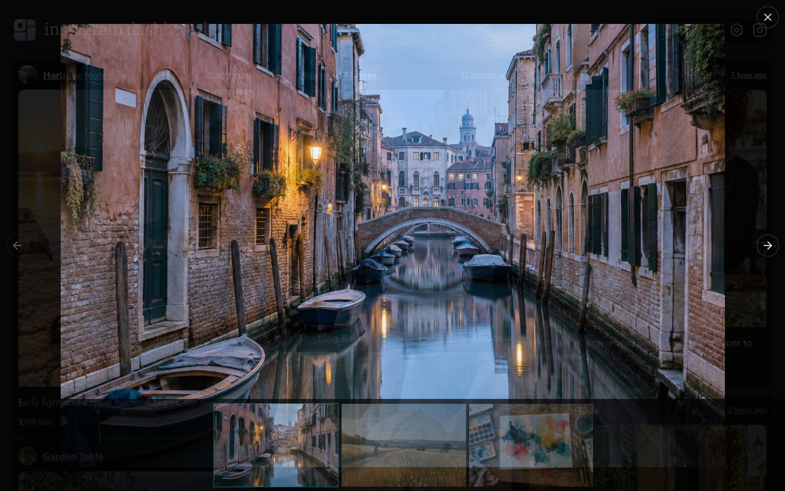

A feed that fits your screen.
Posts fill responsive columns. Scroll for older posts, then use the back-to-top button when you're ready for the latest.
See more of your feed in a responsive dashboard.
Catch up on Stories, like posts, and read comments without losing your place.
Free browser extension Available for Chrome

Built for browsing
Posts fill responsive columns. Scroll for older posts, then use the back-to-top button when you're ready for the latest.
New posts arrive first as your feed refreshes every minute. The dashboard catches up when you return, retries failed requests, and keeps loading other posts if one fails. Pause or refresh it yourself at any time.
Browse up to 50 story previews, with unseen Stories first. Drag the strip to see more, then open a Story in Instagram’s viewer and return to your dashboard.
Browse with buttons or touchpad gestures. Carousels can also advance while in view and pause when you interact.
Choose whether muted videos play as you scroll. Open a photo, video, or carousel in the separate media viewer for a closer look.
Like or unlike a post from the feed or viewer. Open comments beside the media, read the caption, load more comments, and expand replies when you want.

One moment. Full focus.
Select a photo, video, or carousel for a closer look, with thumbnail navigation and arrow-key controls. Read captions and comments alongside the media, or hide the comments panel for more space. Your choice is remembered.
Make space for your feedYour feed, opened up.
Add Instagram Dashboard from the Chrome Web Store, then open your feed in a whole new way.
Add to ChromeYes. The extension uses your existing signed-in Instagram session to load your home feed. You do not need a separate dashboard account or an Instagram API key.
Yes. You can install Instagram Dashboard for free from the Chrome Web Store.
Yes. Instagram’s Messages button and conversations stay accessible while you browse the dashboard. You can hide the button in Settings.
Yes. Enter full-screen mode from the dashboard header, and optionally hide the header in Settings. You can also choose whether Dashboard opens manually, opens automatically on Home, or restores its last visibility state.
Press Esc to return to the normal dashboard view. If you enable “Hide header in full screen mode” in Settings, the header appears again when you leave full screen.
Stalled requests time out, and failed requests retry automatically with a delay. If the problem continues, try reloading Instagram. Instagram can change its internal endpoints or navigation, so an extension update may sometimes be needed.